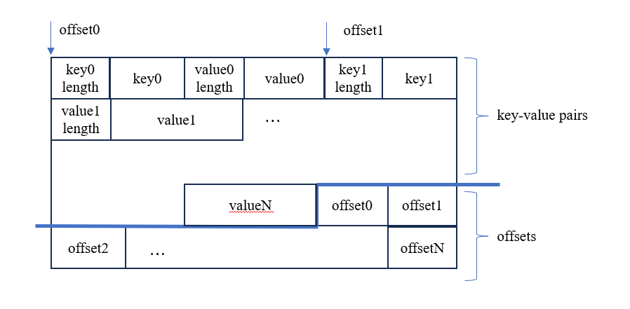
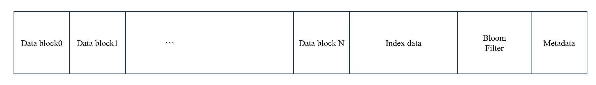

Part 1
In part 1, you will implement
-
BlockIterator,BlockBuilder,SSTable,SSTableIteratorandSSTableBuilder. -
SortedRun,SortedRunIterator. -
IteratorHeap. -
SuperVersion,SuperVersionIteratorandVersion.
Each class contains some incomplete methods. You may add fields and methods as needed, but do not remove any existing fields or remove public methods, nor change the names of the methods.
Block
Block stores internal keys and values. If you do not have time to design complex formats such as a compressed format, we highly recommend you to implement the simplest format as follows:

where the block is divided into two parts, the first part consists of key-value pairs, while the second part is an array of offsets to the key-value pairs.
BlockIterator takes a pointer to the beginning of the Block and the BlockHandle of the Block. You can obtain useful information such as the number of key-value pairs and the size of the Block in BlockHandle. BlockIterator::Seek(key, seq) finds the first record larger than (user_key, seq) and moves to it (refer to the definition of the comparison operator in storage/lsm/format.hpp). BlockIterator::SeekToFirst moves the iterator to the beginning. You can find the comments for Next(), key(), value() and Valid() in storage/lsm/iterator.hpp.
BlockBuilder writes key-value pairs to the block until the block reaches the capacity (refer to block_size in storage/lsm/options.hpp). You need to ensure that the size of the block do not exceed block_size. The offsets of key-value pairs are written after all the key-value pairs are written and BlockBuilder::FinishBlock is called, so you need to record the offsets while writing the data.
Test
You can test it through test/test_lsm --gtest_filter=LSMTest.BlockTest
SSTable
You can implement the format as follows:

where data blocks are Block.
The index consists of the last key and the BlockHandle of each Block, as defined in IndexValue in storage/lsm/format.hpp. It is utilized to locate data block in SSTable::Get, SSTable::Seek and SSTableIterator::Seek. It is preloaded to the memory when opening the SSTable.
The bloom filter is used to test whether a key may exist in the SSTable during SSTable::Get. It is also preloaded to the memory.
You will implement SSTableBuilder::Append and SSTableBuilder::Finish while maintaining the information about the SSTable: index_data_ (the index data), index_offset_ (the offset of the index block), largest_key_ and smallest_key_ (which represent the key range of the SSTable). Once a SSTable is created, the information of the SSTable is transferred to the SSTable structure. You can use BlockBuilder to build data blocks. After writing all the key-value pairs, you can write the index data and the metadata to the file. Since we assume that we preload the index data when we open the SSTable, there is no need to use Block to store index data.
FileWriter
You should use FileWriter to implement SSTableBuilder, BlockBuilder. It collects data and writes them to disk in batch. FileWriter provides two methods AppendValue<T> and AppendString. You can use AppendValue<T> to copy a value of type T to the file. T is a template parameter, it can be uint64_t, float, or structured data which do not have pointers, such as std::pair<uint64_t, uint64_t> and BlockHandle. For string data, you can use AppendString. Here is an example of usage:
std::string str("114514");
writer.AppendValue<uint64_t>(str.length());
.AppendString(str);
If you think the methods of FileWriter is difficult to use, you can modify them, but DO NOT read/write to a raw file handle in SSTableBuilder!
FileReader
You can use FileReader to read metadata and index data while initializing SSTable. The method ReadValue and ReadString is similar to AppendValue and AppendString. Here is an example of usage:
// Read the string "114514"
reader.Seek(offset);
auto len = reader.ReadValue<uint64_t>();
auto str = reader.ReadString(len);
Bloom filter
You will build a bloom filter for each SSTable. If you are not familiar with bloom filter, you can read about it in resources such as link. Basically, bloom filter is a bit array. For each key, it set some bits to 1. The positions of these bits are calculated using hash functions. Then, for each key, if all the corresponding bits are 1, the key may exist, otherwise it does not.
We have implemented a bloom filter for you, which can be found in common/bloomfilter.hpp and common/bloomfilter.cpp. BloomFilter::Create create a bloom filter. BloomFilter::Add add a key to the bloom filter. Since we only use the hash of keys, you can pass the hash to BloomFilter::Add. BloomFilter::Find checks if a key may exist in the bloom filter. It can also accept the hash of keys.
In SSTableBuilder, you should record the hashes of keys in SSTableBuilder::Append and use them to build a bloom filter in SSTableBuilder::Finish.
Test
You can test it through test/test_lsm --gtest_filter=LSMTest.SSTableTest
SortedRun
SortedRun stores an array of SSTables. You will implement it based on SSTable and SSTableIterator.
Test
You can test it through test/test_lsm --gtest_filter=LSMTest.SortedRunTest
IteratorHeap
The IteratorHeap structure is used when performing merge-sort on multiple sorted runs. IteratorHeap takes references to the iterators, so you need to store the iterator in another area and pass the reference to it. The usage of IteratorHeap is as follows:
-
First, call
IteratorHeap::Pushto pass references to the iterators to it. -
Then, if it is necessary, call
IteratorHeap::Buildto do some preprocessing. -
Then, you can use
Next,key,value,Validas an ordinary iterator. It returns the minimum record each time and callNexton the corresponding iterator.
We recommend you to use a heap to maintain the minimum record. You can use std::priority_queue or implement your own.
Note that IteratorHeap is a template class, if you are not familiar with it, you can read about templates in resources such as link.
Test
You can test it through test/test_lsm --gtest_filter=LSMTest.IteratorHeapTest
SuperVersion
After you implement SortedRun, SortedRunIterator and IteratorHeap, implementing SuperVersion should be straightforward.
Test
You can test it through test/test_lsm --gtest_filter=LSMTest.SuperVersionTest
Smart Pointers
We use smart pointers to manage reference counts for SSTables and sorted runs. If you are not familiar with them, you can read about smart pointers in resources such as link.
DO NOT delete them! We rely on reference counts to support multiversion concurrency control.